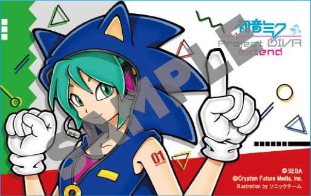
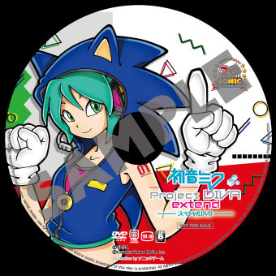
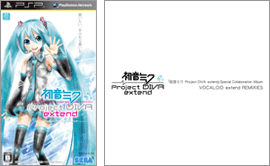
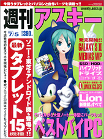

『初音ミク -Project DIVA- extend』予約特典
2011年11月10日発売予定のPSP「プレイステーション・ポータブル」用ソフト『初音ミク -Project DIVA- extend』をセガ公式通販サイト「セガストア」で予約すると、ソニックチームがイラストを担当したオリジナル特典が付いてきます。
【セガストア限定特典 ICカードステッカー＋スペシャルDVD】
ソニックチーム謹製イラスト！オリジナルICカードステッカー

本編に登場するモジュール"ソニックスタイル"をモチーフにしたソニックチームによるイラストを配したICカードステッカー。お持ちのICカードに貼って、他の人とは一味違ったデコ感を演出できます。
初音ミク -Project DIVA- extend
スペシャルDVD（セガストア オリジナルデザインレーベルver）

「初音ミク -Project DIVA-」の魅力的な映像が収録されたスペシャルDVD。
→ セガストア公式サイト
→ 初音ミク -Project DIVA- extend公式サイト
『初音ミク -Project DIVA- extend』予約特典CD

2011年11月10日発売予定のPSP?「プレイステーション・ポータブル」用ソフト『初音ミク -Project DIVA- extend』の予約特典CD"Special Collaboration Album VOCALOID extend REMIXIES"にソニックの楽曲が収録されます。
このCDは、「初音ミク -Project DIVA-」シリーズの歴代BGMをボーカルアレンジしたものに加え、セガを代表する人気ゲーム楽曲を初音ミクたちが歌うなど、ここでしか聴くことのできない超豪華仕様となっております。
収録楽曲リスト
| 1 |
Start of Rainbow ～first step～ （From 「初音ミク -Project DIVA-」）
＜Music & Lyrics by 杉山圭一 ／ Remixed by Dixie Flatline＞ |
| 2 |
藍色の日、空翔ける ～second flight～ （From 「初音ミク -Project DIVA- 2nd」）
＜Music by 杉山圭一 ／ Lyrics by 川島秀仁 ／ Remixed by baker＞ |
| 3 |
恋の祈り ～extend your wave～ （From 「初音ミク -Project DIVA- extend」）
＜Music by 杉山圭一 ／ Lyrics by YUMIKO ／ Remixed by wowaka＞ |
| 4 |
Live and learn （From 「ソニックアドベンチャー２」）
＜Music by 瀬上純 ／ Lyrics by Johnny Gioeli ／ Manipulated by otomania＞ |
| 5 |
Ignite Infinity （From 「ファンタシースターポータブル2 インフィニティ」）
＜Music by 小林秀聡 ／ Lyrics by Runblebee ／ Manipulated by におP＞ |
| 6 |
もしも君が願うのなら （From 「戦場のヴァルキュリア３」）
＜Music by 鷺巣詩郎 ／ Lyrics by 藤林聖子 ／ ReArranged by とく ／ Vocal Manipulated by ライブP＞ |
| 7 |
LOVE14 （From 「電脳戦機バーチャロン」）
＜Music by 小山健太郎 ／ Lyrics by Meg ／ ReArranged by 八王子P＞ |
※特典は数に限りがございます。予約特典は商品ご購入時にお渡し致します。
※実施店舗につきましては店頭にてご確認下さい。
※特典がなくなり次第、本キャンペーンは終了となります。
※特典の内容・デザインは予告なく変更する場合がございます。予め御了承下さい。
→『初音ミク -Project DIVA- extend』公式サイト
週刊アスキーの表紙にソニックと初音ミクが登場！
初音ミクとのコラボモジュールも登場決定！
週刊アスキー7月5日号（6月21日発売）の表紙にソニックとコラボ衣装を身に付けた初音ミクが登場！
このコラボ衣装は今秋発売予定のPSP用ソフト『初音ミク -Project DIVA- Ver.2.5（仮）』にモジュールとして収録される予定です。
→初音ミク -Project DIVA- Ver.2.5（仮）公式サイト
→週刊アスキーPLUS